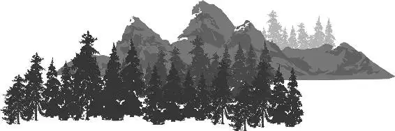

By the time they were five years old, Buck, Libby, and Arlo were expected to help around the farm. The hard work seemed to come naturally to Libby and Buck. They always did their chores—and they even knew how to have fun while doing it. Libby loved tricking Buck and getting him to do her work for her.
One time, when she didn’t particularly feel like watering the crops, she hid in the high stalks of corn with a mouthful of water. When Buck was within range, she aimed and took her shot... spraying him right in the face! Libby quickly retreated into the fields—laughing hysterically at her shocked brother.
Determined to get revenge, Buck ran to the trough and filled his giant mouth with water. Libby peeked out from behind the corn and stuck her tongue out at him, then darted out of sight again.
In his attempt to hit her, Buck sprayed the entire field. When Libby saw that each stalk had been watered, she raced out. Buck chased her through the rows of corn but when he finally caught up, he hardly had any water left. He wound up only spraying her with a light drizzle.
With a big smile on her face, Libby called, “Momma! I finished my watering!”
“Good job, Libby!” Momma answered back. “Buck, get back to your chores!”
Libby grinned as she watched Buck begrudgingly begin his work.
But things were very different for Arlo. He struggled to find his place. Being smaller than his siblings didn’t help matters, but Arlo’s biggest problem was his fear. He was afraid almost all the time and of almost everything. And it held him back—making it difficult for him to accomplish even the simplest of chores.
One morning, Momma helped Arlo get ready to do one of his dreaded daily chores: feeding the claw-footed squawkers. He hated those birds. They made terrible noises and he was sure they could pierce right through his foot with their sharp, hooked beaks. The way they looked at him with their empty, dead eyes ... it was like they were thinking up different ways to peck him to pieces. Just the thought of them sent a ripple of shivers down his spine.
Momma smiled as she hung the basket of corn kernels around his neck and gently nudged him with her big tail. Reluctantly, Arlo headed off alone.
He slowed as he approached the fenced-in coop. As much as he hated all the noises those feathered fiends made, what was even more eerie was the present silence. Carefully and quietly, he peeked inside, wondering where they were.
Just then a rustling in the grass startled him and he jumped, scattering some feed onto the ground.
“Who is that?” Arlo asked, looking toward the sound. He craned his neck through the grass and saw Eustice, a fuzzy, little, baby squawker, tangled up in some weeds. Relieved, Arlo bent down to help her. He peeled off the weeds, one by one. And even gave her a kiss on the side of her soft head.
As he freed Eustice, a pair of big, old, ugly clawed feet scratched into the ground beside him.
Squawk!
It was Henrietta, Eustice’s scary momma!
Arlo screamed as Henrietta chased him away. She screeched and squawked, horrifying Arlo with each awful noise.
“Aaahhhhhhh!” Arlo screamed as he ran for cover.
In his panic, Arlo ran to the silo—where Poppa, Momma, Libby, and Buck were working. He curled himself up in Poppa’s tail and closed his eyes. It was his favorite hiding spot.
Poppa unwound his tail and looked down at Arlo. “Everything alright?” he asked calmly.
“Oh, that?” Arlo said, trying his best to hide his fear. “That was nothing—you know that Henrietta.”
Poppa chuckled. “You’re okay.”
Arlo watched as Poppa went back to work. He filled the silo with corn through the opening, and closed up the hole with a boulder. Then he turned and faced the family.
“That should do it. Today we are forever through with the critters. Why? Because I have made this silo 100% Critter free,” he said proudly.
Momma gazed lovingly her husband. “Put your mark on there, Henry,” she said. “You worked hard.”
Then Poppa pushed his foot into a thick puddle of mud, making a footprint, and stamped his foot onto a rock. He lifted the printed rock and slid it into place—at the top of the silo. “There,” he said smiling. He turned to his wife and said, “You make your mark, Ida.”
“What for?” she asked.
“I couldn’t have built this farm without you,” he explained.
Then Momma made a mark, too, on the big boulder next to Poppa’s.
All three kids excitedly charged toward the silo, shouting, “Me, too! I’m doin’ it! Mine’s going to be the highest!”
Arlo moved toward the mud puddle first. He wanted to put his print up on the silo right away. But Poppa stopped him. “Well, you gotta do something big to earn it. Then one day you’ll put your mark on the silo. And I can’t wait to see it.”
Arlo was inspired by Poppa’s words. He gazed up at Poppa and Momma’s footprints, imagining his up there, right next to theirs. He was determined to make his mark.
